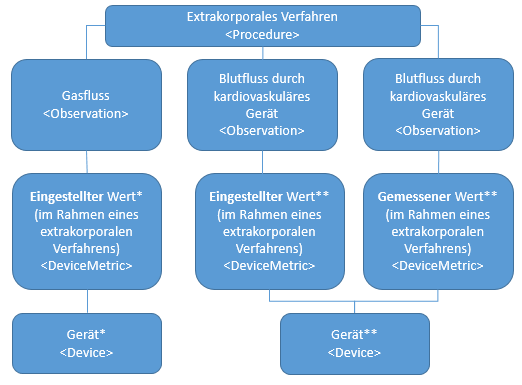

MII IG ICU
2026.0.3 -

MII IG ICU
2026.0.3 -

MII IG ICU - Local Development build (v2026.0.3) built by the FHIR (HL7® FHIR® Standard) Build Tools. See the Directory of published versions
| Offizielle URL: https://www.medizininformatik-initiative.de/fhir/ext/modul-icu/ImplementationGuide/mii-ig-icu-de-v2026 | Version: 2026.0.3 | |||
| Draft Stand: 2026-08-27 | Maschinenlesbarer Name: MII_IG_ICU | |||
Die vorliegende Spezifikation beschreibt die FHIR-Repräsentation des Kerndatensatz-Erweiterungsmoduls 'Intensivmedizin' der Medizininformatik-Initiative. Im Folgenden werden die Use-Cases des Moduls sowie die dazugehörigen FHIR-Profile und Terminologie Ressourcen in ihrer Form beschrieben.
Dieser Leitfaden ist im Rahmen der Medizininformatik-Initiative erstellt worden und unterliegt per Governance-Prozess dem Abstimmungsverfahren des Interoperabilitätsforums und der Technischen Komitees von HL7 Deutschland e.V.
Felix Erdfelder
Margaux Gatrio
Christian Gebauer
Christoph Müller
Tim Steinbach
Fragen zu der vorliegenden Publikation können jederzeit unter https://chat.fhir.org im Stream 'german/mi-initiative' gestellt werden.
Anmerkungen und Kritik werden in Form von 'Issues' im Simplifier-Projekt stets gern entgegengenommen.
Felix Erdfelder
Margaux Gatrio
Christian Gebauer
Christoph Müller
Tim Steinbach
Alexander Zautke
Berke Dincel
Ludwig C. Hinske
Larissa Neumann
Lily Wissing
Copyright © 2019: TMF e. V., Charlottenstraße 42, 10117 Berlin
Der Inhalt dieser Spezifikation ist öffentlich. Die Nachnutzungs- bzw. Veröffentlichungsansprüche sind nicht beschränkt.
Zu den Nutzungsrechten der zugrunde liegenden FHIR-Technologie siehe die FHIR-Basis-Spezifikation.
Einige verwendete Codesysteme werden von anderen Organisationen herausgegeben und gepflegt. Es gilt das Copyright der dort jeweils aufgeführten Herausgeber (Publisher).
Der Inhalt dieses Dokuments ist öffentlich. Zu beachten ist, dass Teile dieses Dokuments auf FHIR Version R4 beruhen, für die das Copyright von HL7 International gilt.
Die Modellierung der Daten soll hierbei den Anforderungen hinsichtlich Komplexität und Granularität intensivmedizinischer, notfallmedizinischer, peripher-stationärer, aber auch ambulante Daten gerecht werden.
Dieses Dokument beschreibt das KDS-Modul Intensivmedizin entsprechend der Entwicklungsstufe 2 (Abb. s. u., "Stufe 2").

Für jede Datenarten wird jeweils mindestens ein generisches Profil zur Aufnahme bisher nicht spezifisch profilierter Daten zur Verfügung gestellt. Diese generischen Profile dienen außschließlich als Templates für die schnelle Entwicklung von Prototypen. Wann immer möglich sollen die spezifischen Profile verwendet werden.
Die Profilierung erstreckt sich ebenfalls über die zugrundeliegenden Prozeduren (Anwendungen von extrakorporalen Verfahren, Beatmungs- und Messverfahren), die beteiligten Geräte sowie deren Firmware- und Konfigurationsversion.
Monitoring- bzw. Vitaldaten umfassen Daten wie z.B.: Blutdruck (arteriell, zentralvenös, pulmonalarteriell, ventrikulär, artrial…), Herzfrequenz, Temperatur, hämodynamisches Monitoring (Herzzeitvolumen, Herzschlagvolumen, systemischer- und pulmonaler Gefäßwiederstand, etc.), pulsoxymetrischen Sauerstoffsättigung prä- und postduktal etc.
Die etablierten Monitoring- und Vitaldaten Profile wurden mit der Version 2025.0.0 in ISiK Profile überführt und werden seit dem dort in enger Kooperation weiter gepflegt.
Parameter von extrakorporalen Verfahren (extrakorporale Membranoxygenierung, Hämofiltration, Dialyse, Apharese …) umfassen Daten wie: Blutfluss, Gasfluss, Dialysatfluss, venöser und arterieller Druck etc.. Zugänge sind noch nicht Teil der hier profilierten Entwicklungsstufe 2 und sollen perspektivisch in gesonderte spezifischen Profilen modelliert werden.
![Kapitel_Parameter_von_extrakorporalen_Verfahren](data:image/png;base64, iVBORw0KGgoAAAANSUhEUgAAANAAAAF5CAYAAADuwKTmAAAAAXNSR0IArs4c6QAAAARnQU1BAACxjwv8YQUAAAAJcEhZcwAAFiUAABYlAUlSJPAAACIxSURBVHhe7Z2Nk1bFmcX3X9tKaiuCyMwAgiaVrJvdJCaVql3d2iAaQIw4DImARvAjaxIQRBBiHFDAgK5RVESgyLClUlHc0iAqi1HL1SxU75yXe2pPmp7P7jvT8845Vb967+379NPd9z5n7rz3UszfBMuyJi0byLIyZANZVoZsIMvKkA1kWRmygSwrQzaQZWXIBrKsDNlAlpWh1g108dKlcPKt98OmJ4+E764bDItX7QhX/ejX4W//5RfGZINauvb2HZ3a+vkTr4Sjb7zXqbmpUqsGOnjsj2HRyu2hd+WO0Nt/ICxc/1JYsvFYuO7+k+HrD50yJhvUEmpq0T0vh76Bg6Hv9sdDz4+3hqePvNlUYbtqxUDnP/k8fH/DYJi/YkfHNKmFG9MWMFPv7bvCd+7+bacW21RxA731p/8Ofcu3hb41+5OLM2aqWLj2YOdudOrMuaY6y6uogeD2XpjnZ88nF2TMVLNw/eGOiT648FlTpWVV1EDfWz84/F3Hdx5TFwvXHgo3DOxu5eFCMQPhgcG85Y8lF2DMdNO7alfY89LrTbWWUxEDwdkLVjzqBwamWq6990iYt2xL+PJ/LzZVW0ZFDIT3PHjilpq4MbWw4I7d4fCpd5qqLaMiBvr5b4+Env4DyUkbUwt9a58Nd217vqnaMipioO/c/WTn2Xtq0sbUwuL7joZv9u9qqraMihgIj67xNjg1aWNqYcmmE2H+bVubqi2jIgbCv0lKTdiY2kCtlpQNZGYVNpAxGdhAxmRgAxmTgQ1kTAY2kDEZ2EDGZGADGZOBDWRMBjaQMRnYQMZkYAMZk4EN1BJnP/6yWc1lrRp8OxlnZjY2UEvAQJsPn+1sHzh1vrMfx0wHMPKnX1xMHjMTxwZqCTWQFu1rZz5pVnlZjD997vMOEGLQV8VcOKY5aE4oNinbIfTHPFToy5wUttkfc2YOvYMiBnPlPraZi2uANAa5dJxuuSPbQC2hBkLhxMXNdhYsii0VA5CHx1iEbIdYvChSHZPtPIbP+A6EeC10jMPi1txKnAPbaEOsrgHtOjeOg7npmDMZG6glUEiUFhsKTaUGiosV/Sg1EPvEhaw5dHwK8XEf5IrFHBDjYpAf5lNzx2vQuWJMjI1t7TPTsYFaggWWameRaYGlio8/pbXgtM9YBkqNnzIQ88VAqXbAfjqmDZQvG6hhNAOxHdsssNGKD58sOG0fzUDYBjxG4j6I130FSrUD5tG+Ok+AY1wrtm2gsWUDNahRFLRRKCqaITYQoBA3UQMBHKM0DrkgNZuKhQ6xTwrkiY3A3BDnCTC+DTS2bCAzq7CBjMnABjImAxvImAxsIGMysIGMycAGKgQey6YeW9dAqcfGeNytj6YBHoWn3jeNBR+xx/kUKNVeEzZQhL6vmAizwUDIo++TwGTWjfM7nvlAqfaamBUGUrENhcALj4vJN/IUf6qiDcchXHh96ajFpIUEcRs/YSktGmwzF8YGI8ViXBUNzp/+EOLjOBxHHOYSj01xnvhELp4DjVdwnOMDiNvIQWl/9OE89w2d73xSyMUxIcSxH/cptuM8sZ3xWCulOXRsiO2l6HoDsbCwzSLhNk4uPuOLHRcICzEGuXgMOTQn2rjPeMTwVxZs64VmAXBf8+g24pgz7qOwMLGNvlwjxtf1aAyUGlPBnLkG5NE1MBfQcdDOPkDnE4NYnn+I/XRcfOpYiNd8iOXcR8pRiq43UCw98TjpkBpGLyCAuA1YaBSLhLm06HCx9IJpwSFeY+NiZF81AoHwGfcBnAfEflqwepzCGBoDkJdrUzQOMVwDPmNxbvE5jcfCOlWMhRija02d11g8DmlcfL5ymRUGSrUDFhOLAIxlIBxnvBYZcrEQGJu60LyAiNdx44vLvhMxEPZZmNpPCzYel2gM0LXF8BxxHiDur8TnVGPjPBqr7brW0c5rzEg5StH1BsIFSRUCTyYuJgsNxBcb4nZ8XHOzMHFheZFwTHMjJo7nMbTrWOjH4xC3Ecfiw7YWhO5jm2OjL/vguPYhGgMQgxwao8eQW/PQCHruCGK1XcdCO+cZ54DYR9cWGwj5NFbR9vh8laDrDcSLQvEEQrxQuJi8IPiENA6fBBeBwoVnkSEHi1zzIQ+lF0/jAS8upbEsECruw32AOUH4ZGFqwWoMNFIM8nJtMZyPzh/ouYHYH2PwXIPUWJTGQozRtcYGYpuKc4MYkzpfuXS9gWYKbVxc0z42UCXYQDMTG8iYDGwgYzKwgYzJwAYyJgMbyJgMbCBjMrCBjMnABjImAxvImAxsIGMysIGMycAGMiaDKg3Uu3xbWLLxeHLCxtTCkk0nwvwfb22qtoyKGOif7n4yLLrn5eSkjamFxfe9Fr7Vv7up2jIqYqC7d74Yetb8LjlpY2qhZ+BQ+MmWZ5uqLaMiBjr6xnuhZ+XO5KSNqYUFd+wKz514q6naMipioIuXLnV+t/SvcaZWFt93NMy9ZXP4/Iu/NFVbRkUMBD31ypvhmpWPJydvzHTTu+o3YedzQ021llMxA0HfXvtE6B04mFyAMdNF30+fC99Y/XjnN6XSKmqgDy58Nvyr3LawcP3h5EKMmWrwteLqZVvCux/+uanSsipqIOjkW+93vg/1+U5kphnceWAe1GRbKm4gCHeiGwZ+M/x7565w7b1Hkoszpi3wwADfefBrW1t3HqoVA0H4fXPPS6+HecseCQvu2B361j7beZGFt8GpRRszWVBTqC2858GjajxtwwODNr7zxGrNQBQeGx4+9U64a9vz4Zv9u8L827Z2/j2SGZtrVu9Ptpu/Bl8Z8C8M8JIU73lKP6oeTa0byJq88NPVqls2UMWygeqXDVSxbKD6ZQNVLBuoftlAFcsGql82UMWygeqXDVSxbKD6ZQNVLBuoftlAFcsGql82UMWygeqXDVSxbKD6ZQNVLBuoftlAFcsGql82UMWygeqXDVSxbKD6ZQNVLBuoftlAFcsGql82UMWygeqXDVSxbKD6ZQNVLBuoftlAFcsGql82UMWygeqXDVSxbKD6ZQNVLBuoftlAFcsGql82UMWygeqXDVSxHviP95otq1a1bqB3zl0IWw4cDz+4ZzAsun17mHvLluT/b2zMZEFNobZQY6i10+9+1FRf+2rNQFjEvz24P1y1dHPoW/1UWLDuhc6fnbjufv91BlMW1BRqa8G6F0PfXU+FOcseCd/fMDglRmrFQPjTEl/70ebQ238gXP/gH5KLNqY9hjp/4A01+Mt9x5qqbEfFDbT2sRfCvOWPhSUbjyUWZszUsWTj8dCzYmdY+atDTXWWV1ED4c4D81z/wMnkgoyZeobC/GET/WLv0aZKy6qYgfD7Jm6ZvvOY2sBfsPva8HfxNv5WajED/ev9+zvfeVILMGa6wZ9/vHH9YFOt5VTEQHhUjadtfmBg6mUoXH3rI+HUmXNN1ZZREQP9ev/xMP/OvYlJG1MPvf37w6YnjzRVW0ZFDPT9DXs673lSkzamFhbd83L4+uqdTdWWURED9S7f1vkz46lJG1MLeMCFvxJfUkUM9JWbHh6e4NAVEzamNvBPf0qqiIEwqdRkjakNG8iYDGwgYzKwgYzJwAYyJgMbyJgMbCBjMrCBjMnABjImAxvImAxsIGMymFUGOn3u82aEy3rtzCfJuImwavDt8OkXF5PHagBrzFknzlnc/8Cp8512bRsPOE9jnXco1V4rs85AuPipY5Ol2w20+fDZK9Z39uMvO+3aNhY4T+iXOqZAqfZamfUGwoWFuA+hDQXCOxYLSMWiVAMhtxYbCobSIkYMj7GwcJzSOWq7FiC2OT/EAxXysr+OrWKb9tVYgvkyH4C4jfNE6fzQh/PbN3Tl3HCcQhz7cZ9iO+bFdsbrvDWHjg2xvQ1mnYFUWmQ4psXGwtDCUSB8shjin9TMqfH8qQ2pSWgGbGueOCeNFveJQW4e0zWhD9eD3IzBGCOtEyCOOTQ3iNfMdaGdfQDGU4MpOj7EfjouPnUsxGs+xOr5TeVog1l/ByKQXqDUBUd/FdpwISHtC9CXFxTo2BDbQRzLgsKF14uvxRv3ASrGaY5YnDPXxTwxei4Qy3HxGYvjcg2pHABzUqmBGKPrTZ2LWLpOjWOONrCBGijuxxcc+2oSxuLCox259ULFBa5jsy+JYydjILQzVuM0RzxuDKTjKZwTxLb4HCmjGSjOo7HaPtI64mMxI+VoAxtI2nGBeLLj4tB9bEPYxoVHAWAbnziGbeTRCweligQgr47LfJgTtxnH+WObYwGugdvMp4WHXKn1E11jDPKhP/MCGoHrUhCr7Zpbz1mcA2IfzDW1DoB8Gqtou+Zog1lnIBX2tWABhLZUMWGf0gIYqRjQTmnhQtwGyKtzw9g8pu1aCOijcRwbwriM1cLTGIgxKs2poD11HOtScZ2YA88DQD89n7oujYUYM5qB2Kbi3CDG2ECzgNgMZuZgA1WADTRzsYGMycAGMiYDG8iYDGwgYzKwgSogfhyrj7yngrYf9XYzNtA0AdOk3nHwXY3Gtk1pA+G9zmx5qmgDTTEoVoiGAWogwBeLKEIUNoQ2HEObin3Yj+JdDHkpHYPzgDAGDYRP9gUQPjEfPG7nGHqcYhtALKQvU7sRG2iKYOGnftKrgRin21qEuo8+fLuP7Tg3Dch9xKIvgLR9PAaCkJPHmA/b8VgEhqP5uxEbaIqgGVJFhuJXaVHSIKl9xLE40a7FDeK8EMwR50HbeAwUGyFWyihog+L2bsEGmmJQnBDvOADbuk9KGGg8eXMMpPsK8kP8YdCt2EDTBAqbRTveQkcxQixKzYFPbhMYIXVXYB7uI0bnwm2anX3iXNhXs2l7bOZuxQaqgPEaCLCoobigVSxsmEGl5qMQq+aj2BdtKQPRiJTmmC3YQMZkYAMZk4ENZEwGNpAxGdhAxmRgAxmTgQ1kTAY2kDEZ2EDGZGADGZOBDWRMBhUbaOiKyRpTG1UaqHf5trBk47HkhI2phSUbj4f5t21tqraMihjou+ueDAvWvZictDG1sOieI+Ebqx9vqraMihjo1/uHnX3n3uSkjamFvjX7w4Zdh5uqLaMiBjr97kdhzrJHhifp70GmXuYv3x5OvvV+U7VlVMRA0I3rB0PPmoPJiRsz3fT+9Lnw92t2N9VaTsUMhLvQ1360ufNFLbUAY6aL6+4/Eebc8kg4fvpPTbWWUzEDQb/cdyxcs2Ln8KT9q5yphaHQc/vu8PMnXmmqtKyKGgha+atDwxN+PCzZdCKxGGOmDtx5YJ5b//134eKlS02FllVxA0G/2Hu08+tcz8Ch4YX4bmSmHnznwa9tuPO0ZR6oFQNB+H0TDxauvnVb6O3f33kG75etpi3w3Rs1hkfVeNqGBwZtfOeJ1ZqBqFNnzoVNTx4JX1+9s/MWGP+UwoyPa1bvT7abK0Ft4SUp3vOUflQ9mlo3kDV54SerVbdsoIplA9UvG6hi2UD1ywaqWDZQ/bKBKpYNVL9soIplA9UvG6hi2UD1ywaqWDZQ/bKBKpYNVL9soIplA9UvG6hi2UD1ywaqWDZQ/bKBKpYNVL9soIplA9UvG6hi2UD1ywaqWDZQ/bKBKpYNVL9soIplA9UvG6hi2UD1ywaqWDZQ/bKBKpYNVL9soIplA9UvG6hi2UD1ywaqWDZQ/bKBKpYNVL9soIplA9Wv1g307od/DjufGwo/vHdvWLhye/jqzQ8n/2tWcyUL17+UbDd/DWoKf+gaNbb1mROdmpsqtWagDy58Fpb/8lDnrzT03rkn9P3s+bD4vqPh+gdOdn6yGlOK6x/8w3BtvRYWrHsh9AzX2lVLN4elDz0zJUZqxUCHjv0xzL1lS+i5a39ncalFG9MWqLne/gNh7rIt4alX3myqsh0VNxB+XZt327Zw7b2vJhdnzFSBu9I1y7eHBwZfbaqzvIoaCHcemAd/GSy1IGOmGnxlgInauhMVMxC+8+DXNt95TG3gTjRn6ZbwzrkLTbWWUzED4YEBvvOkFmDMdNM7cDDcvGlfU63lVMRAeNqBp21+YGDqBd/Nt4bT737UVG0ZFTEQHhzgUXV64sbUQV//0+GhvWUfKBQxEF5g4T1PatLG1AJeTN8wsLup2jIqYiD8CwO8JE1N2phawF+Jx79YKKkiBsI/pfC/MDD1MxS+ctPDTdWWURED4d8jpSdsTF2gVkvKBjKzChvImAxsIGMysIFa4uzHXzaruaxVg28n48zMxgZqCRho8+Gzne0Dp8539uOY6QBG/vSLi8ljZuLYQC2hBtKife3MJ80qL4vxp8993gFCDPqq1IyaA9vsFxtD74Loj3mokAtxcT72Rz7m0Dsox+Q+tpmLc4E0Brl0nG65I9tALaEGQuGk7kBoZ8Gi2FIxAHl4DIUKoQBpCOZAjJqC24DmQh81GnJroSMHixvSHCTOgW20IVbXgHb2xzbHwdx0zJmMDdQSKCRKi41FT6mB4mJFP0oNpMUHcRu51EyxMHZc/IiPxXlAjItBfphPzR2vQeeDMTE2trXPTMcGagkWWKqdRaYFlio+GkULbiIGSo2fMhD7xGjuGPbTedtA+bKBGkYzENuxzQIbrfjwyYIbr4EQo3EkNhDy6b6iuWOYJzajGgPHuFZs20BjywZqUKMoaKNQVFrwaiBAIW6iBgLoR2Gb7cgFcTzkU7HQIfZJgTyxEZgbiudiA40tG8jMKmwgYzKwgYzJwAYyJgMbyJgMbCBjMrCBCoHHsqnH1jVQ6rExHnfro2kQP1YfL3zEHudToFR7TdhAEfq+YiLMBgMhj75PApNZN87veOYDpdprYlYYSMU2FAIvPC4m38hT/KmKNhyHcOH1paMWkxYSxG38hKW0aLDNXBgbjBSLcVU0OH/6Q4iP43AccZhLPDbFeeITuXgONF7BcY4PIG4jB6X90Yfz3Dd0+R/DUsjFMSHEsR/3KbbjPLGd8VgrpTl0bIjtpeh6A7GwsM0i4TZOLj7jix0XCAsxBrl4DDk0J9q4z3jE8FcWbOuFZgFwX/PoNuKYM+6jsDCxjb5cI8bX9WgMlBpTwZy5BuTRNTAX0HHQzj5A5xODWJ5/iP10XHzqWIjXfIjl3EfKUYquN1AsPfE46ZAaRi8ggLgNWGgUi4S5tOhwsfSCacEhXmPjYmRfNQKB8Bn3AZwHxH5asHqcwhgaA5CXa1M0DjFcAz5jcW7xOY3HwjpVjIUYo2tNnddYPA5pXHy+cpkVBkq1AxYTiwCMZSAcZ7wWGXKxEBibutC8gIjXceOLy74TMRD2WZjaTws2HpdoDNC1xfAccR4g7q/E51Rj4zwaq+261tHOa8xIOUrR9QbCBUkVAk8mLiYLDcQXG+J2fFxzszBxYXmRcExzIyaO5zG061jox+MQtxHH4sO2FoTuY5tjoy/74Lj2IRoDEIMcGqPHkFvz0Ah67ghitV3HQjvnGeeA2EfXFhsI+TRW0fb4fJWg6w3Ei0LxBEK8ULiYvCD4hDQOnwQXgcKFZ5EhB4tc8yEPpRdP4wEvLqWxLBAq7sN9gDlB+GRhasFqDDRSDPJybTGcj84f6LmB2B9j8FyD1FiUxkKM0bXGBmKbinODGJM6X7l0vYFmCm1cXNM+NlAl2EAzExvImAxsIGMysIGMycAGMiYDG8iYDGygaULFdzEA70B0vxYwp/i9j7GBpgS+zOU+xJeMAI+v+WKxFgNhTjrHHOL1dxM2UMtAaggUpb6FJxAKjQZCDMUY9KX0TbyKbTAAgBAb30EgfOo4nBf7QZw7jrE/DUFhH+2Yn/6LAORBO4Fq+OFQEhuoJVAoUNyOAtPiJyxQFieLFUXIeORksWo/tqEPixafNATQcRGnx4iaBP31DqTH1IyIoSlocM5HtwnXF5trpmIDtUSOgViQQIsdRRfnjMW+sQE0rx5j0VNjGSieH4DwiXg1hpqO0EBc00zHBmoZSAsuLjIC4XM0AxGIJoT0GIkNAJCXBcw2CG3Y1oJvw0BQ3HemYwNNAVq03NbCQtGx8OLjaI/vWDhGU6EgY6OA2AAAedBPixzSbR03ZaA4DjGcy0gG0vV3GzbQNMCColiAPIZ9AOlPbBULOM7FAk4ZiLHaDlNRGIt58ck27NMMeoxirpEMxP1uxAYyJgMbyJgMbCBjMrCBjMmgSgN99eaHw/UP/iE5YWPqYahOA/Uu3xYW3/daYsLG1MOSjcc6tVpSRQz0w3v3hgXrXkhO2phaWHTPy+Fb/buaqi2jIgba+syJ0HPnnuSkjamFhQP7w0N7X22qtoyKGOidcxfCVUs3+3uQqZihMO+2reHUmXNN1ZZREQNBSx96JvT2H0hM3Jjpp2/ts8NfNfY01VpOxQz07od/DnOWbvHDBFMdSzYeD3OXbQmn3/2oqdZyKmYg6KlX3gzXLN8ern/gZHIhxkw1qMWeFTvCzueGmiotq6IGgh4YfLVjIt+JzHSDOw/Ms2HX4aY6y6u4gSDciXDL7B04OLyQoSsWZky7DHW+86AG27rzUK0YCMKTuZs37es8+ejrf7rzDB4vsmwoU56hTm2hxvCoGjWHBwZtfOeJ1ZqBKCwCz95vGNjdeQv8lZse7vxzCjM216zen2w3V4LawktS1FrpR9WjqXUDWZMXfrpadcsGqlg2UP2ygSqWDVS/bKCKZQPVLxuoYtlA9csGqlg2UP2ygSrW97a8Hj75n///C91WfbKBKtY/b38zfPDJX5o9q0bZQBXLBqpfNlDFsoHqlw1UsWyg+mUDVSwbqH7ZQBXLBqpfNlDFsoHqlw1UsWyg+mUDVSwbqH7ZQBXLBqpfNlDFsoHqlw1UsWyg+mUDVSwbqH7ZQBXrJ3vOhP/802fNnlWjbKCKZQPVLxuoYtlA9csGqlg2UP2ygSqWDVS/bKCKZQPVr9YN9Pp/fRge3PNq+Ie1T3T++9XUf8tq0vSs+V34u1seTR4zf83827aGGwae6PwlhpNvvd9UX/tqzUAfXPgs3LRxX5i77JEw/659YcG6F5v/XD71n4Mbkwdqa+H6l0LPcK3NvXVbuHH9YDh7/tOmGttTKwZ6+sibYc7SzaG3f//w4vzXGMxUMzRce8+EObdsCbufb/e/BituoJW/OhSuvvXRzp+aSC/OmKnh2nuPhHnLH+v8mZ22VNRAuPPAPP4Tj6YehsL8FTtauxMVMxC+8+DXNt95TG0svu9o59e5Nr4TFTMQHhhc/s6TXoQx00nfmmfCDzYMNtVaTkUMhEfVeNrmBwamXoZ/lVu+PRx9472masuoiIHwngePqtMTN6YOevsPhIHtv2+qtoyKGAgvSfGeJzVpY2oBT+Wuu2NHU7VlVMRA+BcGfklqamfJxuNh3vBXjZIqYiD8U4rUhI2pDdRqSdlAZlZhAxmTgQ1kTAZdaaDNh882mS7r0y8udtpfO/NJOH3u8yvipxPMbdXg2x04z+kC5+bAqfPJYyZN1xro7MdfJo9NFVCqPSZloOkykw00cWaVgVAcvAPhE3ckSgsHfVU8pvHYTsWj+FWMQw5K74KxgeL+HHuk/iRes5oB7Tp3xGocpX0UjYHGsyYdT9ek+fU3hXjuFOcan2O06RicE44hlvHxDyLsU8yTQ9caSKUXnBcanzy5iOc2Yngx0c543QaIwQVAO+MViNu8qNxHHvTDNsbFccA56Db3R+pP4nkghsWKdh7T9ek2gNiHIK/Oi/GjzQnxPFf4hLCtuRjHbVwjjB2vHcRrYxvHADiOvgDStXNb5xjPf7LM6juQFgsUx2CbefSnHcX+kF5MtnEbcbFoahQLLzwLR7fH6k/iNev60K6Fw9zIoXnicwI0L7bZdzxrwnY8BoRP5IrFc4j+8fXT4wA5Y2FO8bnT8dEei3GTxQZqjkH4jC/sSIUQw4JiPKTH9OIrLDa98HERjNafxGvW9eUYCPEq5hnPmrAdjwHhc6RrRHgdOB7AmBByx3lJfO40TudVChuoOQbhEyc7LiKANr0wKTQn8wEWA/cVXlS98HERjNafoI/GQJzLSAbCcZ4n9o/Xjv1UoY5nTdjWAgbsw/EYlyLuC3iOgZ4jousDmgNrjfPl0rUGioV2nPSxDBT31YuBPipcLOSgUrG8YPhUsaBZbPGFx8WGOMeR+is6P13fSAbiMQhtGEPPCeNj8dhYa2IMYB+I23ruIOzH5z+O07mnrke8vtT4FH945NCVBsoBF0WLU4tvNoLiU1OpMY0NdAXxT0AUTCputhDfgUr81O4mbCBjMrCBjMnABjImAxvImAxsoArAY1dVKsbUiQ1UAfF7k1qe/OGJpJ+6jY4NVAFqIC1afVGoLwdxnMfwTgamUzEOMXoMuXm3i02qwn78OB/7zEnxfRDmjjkxN3POBmygClADoUDj4mY7C5YGimMADAOwjRgaD30hGgHimMinBmZubNPMgGblPnOjL8TcswkbqAL4kxvSgkVBqtRAWqwsYEoNxD6xGTRHLBoj7oN8sRCD8dlntmEDVQCKj3eAuJ1FrmaIDYR9HovvQOM1ENuVuI/mU2ygcrKBJsFoBmI7tkczEPexPVEDaW4l7oO8uk9soHKygSbBSAZCUVOjGQjbFOImaiCMrUI/xiEfxFj0U7G/DVRGNpCZVdhAxmRgAxmTgQ1kTAY2kDEZ2EDGZGADGZOBDTRF4N2KSt+1TBT05bueicD3PamXoZxf6n3URMD7otn0TsgGahEtdGzr234UWY6JJgNfeILYKCO1x2ANOfPuNoPZQC0A00BqmNhAvBtwn30gNZ3eafivB9Cm7Sr+iwH0pTguDRT3535sIBX2kUeFWBoKwvw4BnPoPLCNNq49dSecadhABWGBaXESFI8aCLBgUfQsLsBCRLsWGYRPNQD6xeNhHG1jQbO44yLXNnyijXPAts6PhmFfrpn7mhv9dJwYHIdS52umYAMVZLIGQnwsxjJGCxfxHEOLniAuFopVixsGQRugSTVXLPbTeaT2dQydZwoaSPvPNGygFqAh1DAoEt1HoUGMH6nQ2I8FjzaNH8lAOhbR4mbha2xsIPZT2G+k/fEYiGvXu+tMxQZqERQWC0gLFaB4WHhoZ9HF8A6hx7UwcSwuUuynilOLG1DcVwNhW+dLJmKg1LqwnrhtJmMDTREoMlVc9PFxFjJAwWmRqoH405ziXQoGUjFWixc5dR44xnHjvDo+hZjRDAR0HhrXLdhAxmRgAxmTgQ1kTAY2kDEZVGmg+T/eGpZsPJacsDG1sGTTiTBv2SNN1ZZREQPdMPCbsHD9S8lJG1ML1977alh0+/amasuoiIE27Doceu7al5y0MbXQ138grHn0+aZqy6iIgU6+9X6Ye+u24UkOXTFpY2qhZ+WOcPSN95qqLaMiBoJuXD8YevufSU7cmOmmb+Bg+Me1T4SLly41FVtGxQx09vyn4aqlm4d/zzySXIAx0wUecM0Zrs13zl1oqrWcihkI2v38qTBv+WPDk/avcqYWhkLP7Y+H7QdPNlVaVkUNBN28aV+Yv2JHWHzf0cRijJk6cOeBeX54z57iv7pRxQ0E4U4055YtoW8NvhP5bmSmHnznwa9tuPO0ZR6oFQNB+E70gw2DoWfFY6G3/0DnGfySjceTizUmF7wkRY3hUTWetuGBQRvfeWK1ZiAKjw0Htv8+XLtqe+ctMP4phTGlQW3hJSne86Dm2rzrqFo3kGV1s2wgy8qQDWRZGbKBLCtDNpBlZcgGsqwM2UCWlSEbyLIyZANZVoZsIMvKkA1kWRmygSxr0grh/wBGVvby3phRBQAAAABJRU5ErkJggg==)
Am Beispiel von ECMO-Prarametern:
Am ECMO-Gerät wird ein Gasfluss eingestellt, ohne dass ein direkt korrespondierender Messwert erhoben wird. Der Blutfluss kann hingegen sowohl eingestellt als auch gemessen werden (eingestellter Zielwert und tatsächlich gemessener Blutfluss). In beiden Fällen sind die Werte dem gleichen ECMO-Gerät zugeordnet an welchem die Werte eingestellt bzw. gemessen werden.

Wir unterscheiden zwei Arten von gemessenen und eingestellten Werten (siehe obige Abb.):
Das Gerät, welches den Messwert erhoben hat/bei dem ein Wert eingestellt wurde, ist bekannt. Es korrespondiert zu den Ressourcen mit * (also „ eingestellter Wert* “ und „ Gerät* “). In diesem Fall ist das physische Gerät bekannt. Es gibt damit (im Rahmen der übergeordneten Prozedur) mindestens eine DeviceMetric, auf welche alle (bzw. die zutreffenden) Observations verweisen. Diese DeviceMetric enthält dann (neben gemessen/eingestellt) eine Referenz auf dasjenige Gerät, welches die Messwerte erzeugt, bzw. wo ein Wert eingestellt wurde.
Das Gerät ist nicht bekannt, bzw. soll nicht modelliert werden. Es korrespondiert zu den Ressourcen mit ** (also „ eingestellter Wert** " und „ Gerät** “). In diesem Fall ist das physische Gerät nicht bekannt. Observations zeigen jeweils auf eine generische Ressource für eingestellter Wert bzw. gemessener Wert. Diese beiden können wiederum auf ein generisches Gerät verweisen. Die DeviceMetrics sagen aus, dass es sich bei der Observation um einen eingestellten bzw. gemessenen Wert im Rahmen eines extrakorporalen Verfahrens (siehe Procedure.category = Observation.category = DeviceMetric.type) handelt, das Device sagt, dass es sich um bspw. ein ECMO-Gerät handelt. In diesem Fall können diese selben drei FHIR-Ressourcen verwendet werden, um alle Werte, die im Rahmen von ECMOs gemessen, oder eingestellt wurden, zu annotieren.
Beatmungswerte umfassen Daten wie z.B.Beatmungsart (Modus), Plateaudruck, endexspiratorischer Druck, Unterstützungsdruck, Compliance, inspiratorische Sauerstofffraktion (FiO2), endexspiratorischen CO2 – Partialdruck, Tidalvolumen, spontane und mechanische Atemfrequenz, etc.. Atemwege und Zugänge sind noch nicht Teil der hier profilierten Entwicklungsstufe 2 und sollen perspektivisch in gesonderte spezifischen Profilen modelliert werden.
Beatmungswerte werden analog zu Parametern von extrakorporalen Verfahren profiliert.
Die semantische Annotation referenziert mindestens einen Primärcode der Terminologien LOINC und/oder SNOMED CT. Des Weiteren wird wann immer möglich eine semantische Annotation nach ISO/IEEE 11073-10101 hinzugefügt, um eine Interoperabilität mit der Medizingeräten- bzw. Medizinproduktekommunikation zu ermöglich. Ebenfalls wird auf eine semantische Interoperabilität mit dem AKTIN Datensatz geachtet.